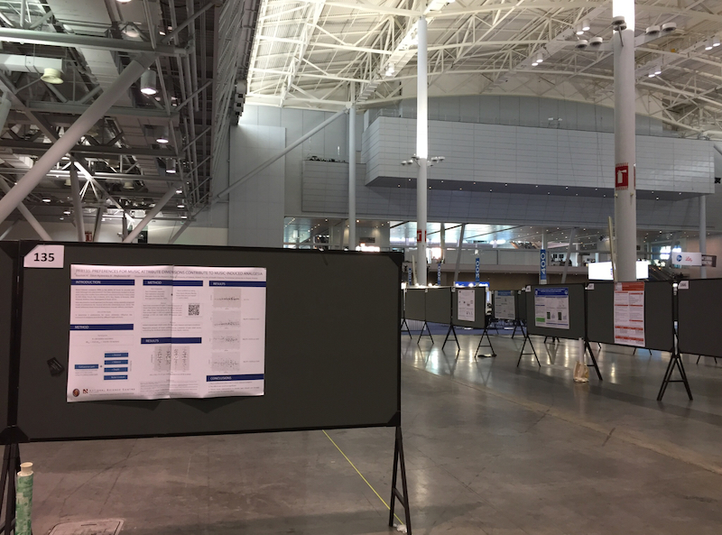

MBP 07
Krzysztof Basiński
Komunikowanie wyników badań naukowych
Sposoby komunikacji w nauce (dla naukowców)
- artykuły w czasopismach naukowych
- książki/monografie
- konferencje
Artykuły w czasopismach naukowych
- Raporty z badań
- Krótkie raporty z badań
- Systematyczne przeglądy/metaanalizy
- Komentarze
- Editoriale
- …i wiele innych, zależnie od czasopisma
Cykl publikacyjny
- Złożenie manuskryptu
- Redaktor kwalifikuje do recenzji
- Recenzja -> przyjęcie / odrzucenie / poprawki
- Ew. ponowna recenzja
- Publikacja albo odrzucenie
Modele publikacyjne
- Model tradycyjny
- Open access
Model tradycyjny
- Ograniczony dostęp do artykułów
- Płatny egzemplarz/dostęp do czasopisma
- Najczęściej dostęp kupują biblioteki
- Czasem dostęp dla członków towarzystw naukowych
Model open access
- Nieograniczony dostęp do artykułów
- Autor płaci za publikację
- Najczęściej za pieniądze z grantów
- Problemy z “drapieżnością” niektórych wydawców
Dobre czasopisma open access
- Scientific Reports
- PLOS One
- Frontiers in Psychology
Wskaźniki bibliometryczne
- Impact Factor
- Hirsch Index
Książki / monografie
- Książka jest naukowa jeśli jest recenzowana
- Standardem są dwie recenzje dokonane przez autorytety w dziedzinie
Konferencje naukowe - po co są?
- Prezentowanie wyników wstępnych
- Dyskusje
- Nawiązywanie kontaktów
Co można robić na konferencjach naukowych?
- Wykłady plenarne
- Seminaria
- Sesje plakatowe
Co jeszcze można robić na konferencjach?
- Bankiety, imprezy
- Wystawcy
- Warsztaty
- Networking
Konferencje naukowe
Centrum konferencyjne
Konferencje naukowe
Sesje plakatowe